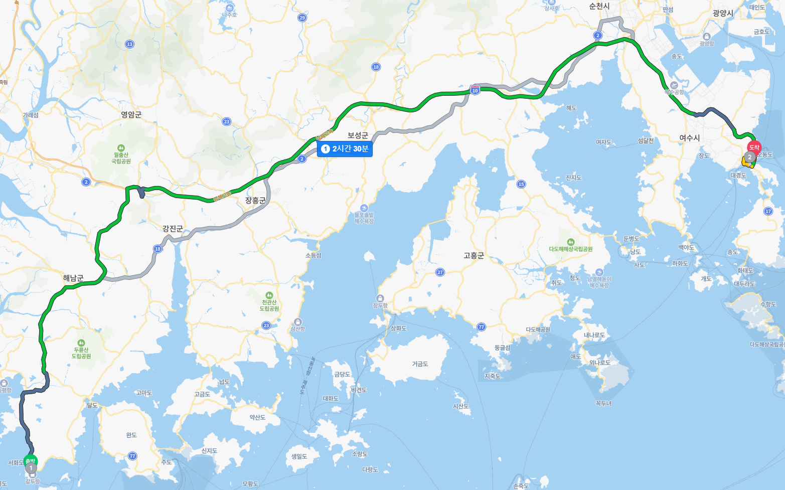

2일차 계획
09:30 - 기상 후 준비 및 숙소 체크아웃
11:00 - 12:00 여수 낭만항 게장 가서 점심 식사
12:00 - 12:30 여수 오동도로 이동
12:30 - 13:00 오동도 관광
13:00 - 16:00 여수에서 거제로 이동(장 보는 시간 포함)
16:00 - 18:00 숙소 체크인 및 짐정리 후 물놀이
18:00 - 19:00 씻고 저녁 식사(바베큐) 준비
19:00 - 21:00 저녁 식사
21:00 - 휴식시간 및 산책
전체경로
